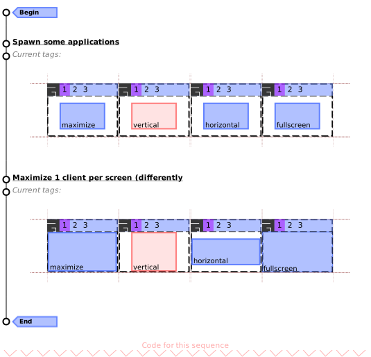

Module: client
A process window.
Clients are the name used by Awesome (and X11) to refer to a window.
A program can have multiple clients (e.g. for dialogs) or none at all (e.g.
command line applications).
Clients are usually grouped by classes.
A class is the name used by X11 to help the window manager distinguish
between windows and write rules for them. A client’s behavior is also
defined by its type and size_hints properties.
See the xprop command line application to query properties for a client.

The client’s :geometry() function returns a table with x, y, width
and height. The area returned excludes the border width.
All clients also have a shape_bounding and shape_clip used to “crop” the
client’s content.
Finally, each clients can have titlebars (see awful.titlebar).
Additionally to the classes described here, one can also use signals as described in signals and X properties as described in xproperties.
Some signal names are starting with a dot. These dots are artefacts from the documentation generation, you get the real signal name by removing the starting dot.
Accessing client objects can be done in multiple ways depending on the context. To get the currently focused client:
local c = client.focus if c then -- do something end
To get a list of all clients, use client:get:
for _, c in ipairs(client.get()) do -- do something end
To execute a callback when a new client is added, use the manage signal:
client.connect_signal("manage", function(c) -- do something end)
To be notified when a property of a client changed:
client.connect_signal("property::name", function(c) -- do something end)
To be notified when a property of a specific client c changed:
c:connect_signal("property::name", function() -- do something end)
To get all the clients for a screen use either screen.clients or screen.tiled_clients.

Core components relationship
|
|
|||||||||||||||||||||||||||||||||||||||
| Legend: c: a client object, t: a tag object, s: a screen object, k: an awful.key object, b: a awful.button object, n: a naughty.notification object | ||||||||||||||||||||||||||||||||||||||||


Info:
- Copyright: 2008-2009 Julien Danjou
- Author: Julien Danjou <julien@danjou.info>
Static module functions
Object properties
| window | string | The X window id. |
| name | string | The client title. |
| skip_taskbar | boolean | True if the client does not want to be in taskbar. |
| type | string | The window type. |
| class | string | The client class. |
| instance | string | The client instance. |
| pid | number | The client PID, if available. |
| role | string | The window role, if available. |
| machine | string | The machine client is running on. |
| icon_name | string | The client name when iconified. |
| icon | surface | The client icon as a surface. |
| icon_sizes | table | The available sizes of client icons. |
| screen | screen | Client screen. |
| hidden | boolean | Define if the client must be hidden, i.e. |
| minimized | boolean | Define it the client must be iconify, i.e. |
| size_hints_honor | boolean | Honor size hints, e.g. |
| border_width | integer | The client border width. |
| border_color | pattern | The client border color. |
| urgent | boolean | The client urgent state. |
| content | surface | A cairo surface for the client window content. |
| opacity | number | The client opacity. |
| ontop | boolean | The client is on top of every other windows. |
| above | boolean | The client is above normal windows. |
| below | boolean | The client is below normal windows. |
| fullscreen | boolean | The client is fullscreen or not. |
| maximized | boolean | The client is maximized (horizontally and vertically) or not. |
| maximized_horizontal | boolean | The client is maximized horizontally or not. |
| maximized_vertical | boolean | The client is maximized vertically or not. |
| transient_for | client | The client the window is transient for. |
| group_window | client | Window identification unique to a group of windows. |
| leader_window | client | Identification unique to windows spawned by the same command. |
| size_hints | table | A table with size hints of the client. |
| motif_wm_hints | table | The motif WM hints of the client. |
| sticky | boolean | Set the client sticky, i.e. |
| modal | boolean | Indicate if the client is modal. |
| focusable | boolean | True if the client can receive the input focus. |
| shape_bounding | surface | The client’s bounding shape as set by awesome as a (native) cairo surface. |
| shape_clip | surface | The client’s clip shape as set by awesome as a (native) cairo surface. |
| shape_input | surface | The client’s input shape as set by awesome as a (native) cairo surface. |
| client_shape_bounding | surface | The client’s bounding shape as set by the program as a (native) cairo surface. |
| client_shape_clip | surface | The client’s clip shape as set by the program as a (native) cairo surface. |
| startup_id | string | The FreeDesktop StartId. |
| valid | boolean | If the client that this object refers to is still managed by awesome. |
| first_tag | tag | The first tag of the client. |
| marked | boolean | If a client is marked or not. |
| is_fixed | boolean | Return if a client has a fixed size or not. |
| immobilized_horizontal | boolean | Is the client immobilized horizontally? |
| immobilized_vertical | boolean | Is the client immobilized vertically? |
| floating | boolean | The client floating state. |
| x | integer | The x coordinates. |
| y | integer | The y coordinates. |
| width | width | The width of the client. |
| height | height | The height of the client. |
| dockable | boolean | If the client is dockable. |
| requests_no_titlebar | boolean | If the client requests not to be decorated with a titlebar. |
| shape | gears.shape | Set the client shape. |
Object methods
| :struts (struts) | Return client struts (reserved space at the edge of the screen). |
| :buttons (buttons_table) | Get or set mouse buttons bindings for a client. |
| :isvisible () | Check if a client is visible on its screen. |
| :kill () | Kill a client. |
| :swap (c) | Swap a client with another one in global client list. |
| :tags (tags_table) | Access or set the client tags. |
| :raise () | Raise a client on top of others which are on the same layer. |
| :lower () | Lower a client on bottom of others which are on the same layer. |
| :unmanage () | Stop managing a client. |
| :geometry (geo) | Return or set client geometry. |
| :apply_size_hints (width, height) | Apply size hints to a size. |
| :keys (keys_table) | Get or set keys bindings for a client. |
| :get_icon (index) | Get the client’s n-th icon. |
| :jump_to (merge) | Jump to the given client. |
| :relative_move ([x=c.x[, y=c.y[, w=c.width[, h=c.height]]]]) | Move/resize a client relative to current coordinates. |
| :move_to_tag (target) | Move a client to a tag. |
| :toggle_tag (target) | Toggle a tag on a client. |
| :move_to_screen ([s=c.screen.index+1]) | Move a client to a screen. |
| :to_selected_tags () | Tag a client with the set of current tags. |
| :get_transient_for_matching (matcher) | Get a matching transient_for client (if any). |
| :is_transient_for (c2) | Is a client transient for another one? |
| :emit_signal (name, ...) | Emit a signal. |
| :connect_signal (name, func) | Connect to a signal. |
| :weak_connect_signal (name, func) | Connect to a signal weakly. |
Signals
| scanning | AwesomeWM is about to scan for existing clients. |
| scanned | AwesomeWM is done scanning for clients. |
| focus | When a client gains focus. |
| list | Before manage, after unmanage, and when clients swap. |
| swapped | When 2 clients are swapped |
| manage | When a new client appears and gets managed by Awesome. |
| button::press | |
| button::release | |
| mouse::enter | |
| mouse::leave | |
| mouse::move | |
| property::window | |
| request::activate | When a client should get activated (focused and/or raised). |
| request::geometry | |
| request::tag | |
| request::urgent | |
| tagged | When a client gets tagged. |
| unfocus | When a client gets unfocused. |
| unmanage | |
| untagged | When a client gets untagged. |
| raised | |
| lowered | |
| property::size | When the height or width changed. |
| property::position | When the x or y coordinate changed. |
| property::floating_geometry | The last geometry when client was floating. |
| request::titlebars | Emited when a client need to get a titlebar. |
| marked | The client marked signal (deprecated). |
| unmarked | The client unmarked signal (deprecated). |
Theme variables
| beautiful.border_focus | string | The border color when the client is focused. |
| beautiful.border_normal | string | The border color when the client is not focused. |
| beautiful.border_width | integer | The client border width. |
| beautiful.border_marked | string | The border color when the client is focused. |
Deprecated functions
| awful.client.jumpto [deprecated] | Jump to the given client. |
| awful.client.visible [deprecated] | Get visible clients from a screen. |
| awful.client.tiled [deprecated] | Get visible and tiled clients |
| awful.client.moveresize [deprecated] | Move/resize a client relative to current coordinates. |
| awful.client.movetotag [deprecated] | Move a client to a tag. |
| awful.client.toggletag [deprecated] | Toggle a tag on a client. |
| awful.client.movetoscreen [deprecated] | Move a client to a screen. |
| awful.client.mark [deprecated] | Mark a client, and then call ‘marked’ hook. |
| awful.client.unmark [deprecated] | Unmark a client and then call ‘unmarked’ hook. |
| awful.client.ismarked [deprecated] | Check if a client is marked. |
| awful.client.togglemarked [deprecated] | Toggle a client as marked. |
| awful.client.getmarked [deprecated] | Return the marked clients and empty the marked table. |
| awful.client.floating.set [deprecated] | Set a client floating state, overriding auto-detection. |
| awful.client.isfixed [deprecated] | Return if a client has a fixed size or not. |
| awful.client.floating.get [deprecated] | Get a client floating state. |
| awful.client.floating.toggle [deprecated] | Toggle the floating state of a client between ‘auto’ and ‘true’. |
| awful.client.dockable.get [deprecated] | Get a client’s dockable state. |
| awful.client.dockable.set [deprecated] | Set a client’s dockable state, overriding auto-detection. |
| awful.client.property.get [deprecated] | Get a client property. |
| awful.client.property.set [deprecated] | Set a client property. |
| awful.client.run_or_raise [deprecated] | Switch to a client matching the given condition if running, else spawn it. |
| awful.client.get_transient_for_matching [deprecated] | Get a matching transient_for client (if any). |
| awful.client.is_transient_for [deprecated] | Is a client transient for another one? |
Layout related functions
| awful.client.getmaster | Get the master window. |
| awful.client.setmaster | Set the client as master: put it at the beginning of other windows. |
| awful.client.setslave | Set the client as slave: put it at the end of other windows. |
| awful.client.idx | Calculate a client’s column number, index in that column, and number of visible clients in this column. |
| awful.client.setwfact | Set the window factor of a client |
| awful.client.incwfact | Change window factor of a client. |
Extra properties available in awful.rules and awful.spawn
| placement | The client default placement on the screen. |
| honor_padding | When applying the placement, honor the screen padding. |
| honor_workarea | When applying the placement, honor the screen work area. |
| tag | The client default tag. |
| tags | The client default tags. |
| new_tag | Create a new tag for this client. |
| switch_to_tags | Unselect the current tags and select this client tags. |
| focus | Define if the client should grab focus by default. |
| titlebars_enabled | Should this client have a titlebar by default. |
| callback | A function to call when this client is ready. |
Tables
| awful.client.object | Client class. |
Fields
| client.focus | client | The focused client or nil (in case there is none). |
lib.awful.client.focus Functions
| awful.client.focus.history.delete (c) | Remove a client from the focus history |
| awful.client.focus.byidx (i[, c]) | Focus a client by its relative index. |
| awful.client.focus.filter (c) | Filter out window that we do not want handled by focus. |
| awful.client.focus.history.add (c) | Update client focus history. |
| awful.client.focus.history.get (s, idx, filter) | Get the latest focused client for a screen in history. |
| awful.client.focus.history.previous () | Focus the previous client in history. |
| awful.client.focus.bydirection (dir[, c[, stacked=false]]) | Focus a client by the given direction. |
| awful.client.focus.global_bydirection (dir[, c[, stacked=false]]) | Focus a client by the given direction. |
lib.awful.client.shape Functions
| awful.client.shape.get_transformed (c, shape_name) | Get one of a client’s shapes and transform it to include window decorations. |
| awful.client.shape.update.all (c) | Update all of a client’s shapes from the shapes the client set itself. |
| awful.client.shape.update.bounding (c) | Update a client’s bounding shape from the shape the client set itself. |
| awful.client.shape.update.clip (c) | Update a client’s clip shape from the shape the client set itself. |
lib.awful.client.urgent Functions
| awful.urgent.get () | Get the first client that got the urgent hint. |
| awful.urgent.jumpto (merge) | Jump to the client that received the urgent hint first. |
| awful.urgent.add (c, prop) | Adds client to urgent stack. |
| awful.urgent.delete (c) | Remove client from urgent stack. |
Static module functions
- client.instances ()
-
Get the number of instances.
Returns:
-
The number of client objects alive.
- client.get ([screen[, stacked]])
-
Get all clients into a table.
Parameters:
- screen integer A screen number to filter clients on. (optional)
- stacked boolean Return clients in stacking order? (ordered from top to bottom). (optional)
Returns:
-
table
A table with clients.
- client.disconnect_signal (name, func)
-
Disconnect from a signal.
Parameters:
- name string The name of the signal.
- func function The callback that should be disconnected.
- client.emit_signal (name, ...)
-
Emit a signal.
Parameters:
- name string The name of the signal.
- ... Extra arguments for the callback functions. Each connected function receives the object as first argument and then any extra arguments that are given to emit_signal().
- client.connect_signal (name, func)
-
Connect to a signal.
Parameters:
- name string The name of the signal.
- func function The callback to call when the signal is emitted.
- awful.client.next (i[, sel[, stacked=false]])
-
Get a client by its relative index to another client.
If no client is passed, the focused client will be used.
Parameters:
- i int The index. Use 1 to get the next, -1 to get the previous.
- sel client.object The client. (optional)
- stacked boolean Use stacking order? (top to bottom) (default false)
Returns:
-
A client, or nil if no client is available.
Usage:
-- focus the next window in the index awful.client.next(1) -- focus the previous awful.client.next(-1)
- awful.client.swap.bydirection (dir[, c=focused[, stacked=false]])
-
Swap a client with another client in the given direction.
Parameters:
- dir string The direction, can be either “up”, “down”, “left” or “right”.
- c client.object The client. (default focused)
- stacked boolean Use stacking order? (top to bottom) (default false)
- awful.client.swap.global_bydirection (dir[, sel])
-
Swap a client with another client in the given direction.
Swaps across screens.
Parameters:
- dir The direction, can be either “up”, “down”, “left” or “right”.
- sel client.object The client. (optional)
- awful.client.swap.byidx (i[, c])
-
Swap a client by its relative index.
Parameters:
- i The index.
- c client.object The client, otherwise focused one is used. (optional)
- awful.client.cycle (clockwise[, s[, stacked=false]])
-
Cycle clients.
Parameters:
- clockwise True to cycle clients clockwise.
- s The screen where to cycle clients. (optional)
- stacked boolean Use stacking order? (top to bottom) (default false)
- awful.client.restore (s)
-
Restore (=unminimize) a random client.
Parameters:
- s The screen to use.
Returns:
-
The restored client if some client was restored, otherwise nil.
- awful.client.property.persist (prop, kind)
-
Set a client property to be persistent across restarts (via X properties).
Parameters:
- prop The property name.
- kind The type (used for register_xproperty). One of “string”, “number” or “boolean”.
- awful.client.iterate (filter, start, s)
-
Returns an iterator to cycle through clients.
Starting from the client in focus or the given index, all clients that match a given criteria.
Parameters:
- filter a function that returns true to indicate a positive match
- start what index to start iterating from. Defaults to using the index of the currently focused client.
- s which screen to use. nil means all screens.
Usage:
-- un-minimize all urxvt instances local urxvt = function (c) return awful.rules.match(c, {class = "URxvt"}) end for c in awful.client.iterate(urxvt) do c.minimized = false end
- awful.client.focus.history.disable_tracking ()
-
Disable history tracking.
See awful.client.focus.history.enable_tracking to enable it again.
Returns:
-
int
The internal value of
disabled_count(calls to this function without calling awful.client.focus.history.enable_tracking). - awful.client.focus.history.enable_tracking ()
-
Enable history tracking.
This is the default, but can be disabled through awful.client.focus.history.disable_tracking.
Returns:
-
boolean
True if history tracking has been enabled.
- awful.client.focus.history.is_enabled ()
-
Is history tracking enabled?
Returns:
- bool True if history tracking is enabled.
- int The number of times that tracking has been disabled.
Object properties
- window (string)
-
The X window id.
Signal:
- property::window
- name (string)
-
The client title.
Signal:
- property::name
- skip_taskbar (boolean)
-
True if the client does not want to be in taskbar.
Signal:
- property::skip_taskbar
- type (string)
-
The window type.
Valid types are:
- desktop: The root client, it cannot be moved or resized.
- dock: A client attached to the side of the screen.
- splash: A client, usually without titlebar shown when an application starts.
- dialog: A dialog, see transient_for.
- menu: A context menu.
- toolbar: A floating toolbar.
- utility:
- dropdown_menu: A context menu attached to a parent position.
- popup_menu: A context menu.
- notification: A notification popup.
- combo: A combobox list menu.
- dnd: A drag and drop indicator.
- normal: A normal application main window.
More information can be found here
Signal:
- property::type
- class (string)
-
The client class.
To get a client class from the command line, use the command
xprop WM_CLASS. The class will be the second string.Signal:
- property::class
- instance (string)
-
The client instance.
To get a client instance from the command line, use the command
xprop WM_CLASS. The instance will be the first string.Signal:
- property::instance
- pid (number)
-
The client PID, if available.
Signal:
- property::pid
- role (string)
-
The window role, if available.
Signal:
- property::role
- machine (string)
-
The machine client is running on.
Signal:
- property::machine
- icon_name (string)
-
The client name when iconified.
Signal:
- property::icon_name
- icon (surface)
-
The client icon as a surface.
This property holds the client icon closest to the size configured via awesome.set_preferred_icon_size.
It is not a path or an “real” file. Rather, it is already a bitmap surface.
Typically you would want to use awful.widget.clienticon to get this as a widget.
Working with icons is tricky because their surfaces do not use reference counting correctly. If
gears.surface(c.icon)is called multiple time on the same icon, it will cause a double-free error and Awesome will crash. To get a copy of the icon, you can use:local s = gears.surface(c.icon) local img = cairo.ImageSurface.create(cairo.Format.ARGB32, s:get_width(), s:get_height()) local cr = cairo.Context(img) cr:set_source_surface(s, 0, 0) cr:paint()Signal:
- property::icon
Usage:
local ib = wibox.widget.imagebox(c.icon) - icon_sizes (table)
-
The available sizes of client icons. This is a table where each entry contains the width and height of an icon.
Signal:
- property::icon_sizes
See also:
- screen (screen)
-
Client screen.
Signal:
- property::screen
- hidden (boolean)
-
Define if the client must be hidden, i.e. never mapped, invisible in taskbar.
Signal:
- property::hidden
- minimized (boolean)
-
Define it the client must be iconify, i.e. only visible in taskbar.
Signal:
- property::minimized
- size_hints_honor (boolean)
-
Honor size hints, e.g. respect size ratio.
For example, a terminal such as
xtermrequire the client size to be a multiple of the character size. Honoring size hints will cause the terminal window to have a small gap at the bottom.This is enabled by default. To disable it by default, see awful.rules.
Signal:
- property::size_hints_honor
See also:
- border_width (integer)
- The client border width.
- border_color (pattern)
-
The client border color.
Signal:
- property::border_color
Type constraints:
- pattern Any string, gradients and patterns will be converted to a cairo pattern.
See also:
- urgent (boolean)
-
The client urgent state.
Signal:
- property::urgent
- content (surface)
-
A cairo surface for the client window content.
To get the screenshot, use:
gears.surface(c.content)To save it, use:
gears.surface(c.content):write_to_png(path) - opacity (number)
-
The client opacity.
Signal:
- property::opacity
Type constraints:
- number Between 0 (transparent) to 1 (opaque)
- ontop (boolean)
- The client is on top of every other windows.
- above (boolean)
-
The client is above normal windows.
Signal:
- property::above
- below (boolean)
-
The client is below normal windows.
Signal:
- property::below
- fullscreen (boolean)
-
The client is fullscreen or not.

screen[1].clients[1].maximized = true screen[2].clients[1].maximized_vertical = true screen[3].clients[1].maximized_horizontal = true screen[4].clients[1].fullscreen = trueSignal:
- property::fullscreen
- maximized (boolean)
-
The client is maximized (horizontally and vertically) or not.

screen[1].clients[1].maximized = true screen[2].clients[1].maximized_vertical = true screen[3].clients[1].maximized_horizontal = true screen[4].clients[1].fullscreen = trueSignal:
- property::maximized
- maximized_horizontal (boolean)
-
The client is maximized horizontally or not.

screen[1].clients[1].maximized = true screen[2].clients[1].maximized_vertical = true screen[3].clients[1].maximized_horizontal = true screen[4].clients[1].fullscreen = trueSignal:
- property::maximized_horizontal
- maximized_vertical (boolean)
-
The client is maximized vertically or not.

screen[1].clients[1].maximized = true screen[2].clients[1].maximized_vertical = true screen[3].clients[1].maximized_horizontal = true screen[4].clients[1].fullscreen = trueSignal:
- property::maximized_vertical
- transient_for (client)
-
The client the window is transient for.
Signal:
- property::transient_for
- group_window (client)
-
Window identification unique to a group of windows.
Signal:
- property::group_window
- leader_window (client)
- Identification unique to windows spawned by the same command.
- size_hints (table)
-
A table with size hints of the client.
Signal:
- property::size_hints
See also:
- motif_wm_hints (table)
-
The motif WM hints of the client.
This is nil if the client has no motif hints. Otherwise, this is a table that contains the present properties. Note that awesome provides these properties as-is and does not interpret them for you. For example, if the function table only has “resize” set to true, this means that the window requests to be only resizable, but asks for the other functions not to be able. If however both “resize” and “all” are set, this means that all but the resize function should be enabled.
Signal:
- property::motif_wm_hints
- sticky (boolean)
-
Set the client sticky, i.e. available on all tags.
Signal:
- property::sticky
- modal (boolean)
-
Indicate if the client is modal.
Signal:
- property::modal
- focusable (boolean)
-
True if the client can receive the input focus.
Signal:
- property::focusable
- shape_bounding (surface)
-
The client’s bounding shape as set by awesome as a (native) cairo surface.
Signal:
- property::shape_bounding
See also:
- shape_clip (surface)
-
The client’s clip shape as set by awesome as a (native) cairo surface.
Signal:
- property::shape_clip
- shape_input (surface)
-
The client’s input shape as set by awesome as a (native) cairo surface.
Signal:
- property::shape_input
- client_shape_bounding (surface)
-
The client’s bounding shape as set by the program as a (native) cairo surface.
Signal:
- property::shape_client_bounding
- client_shape_clip (surface)
-
The client’s clip shape as set by the program as a (native) cairo surface.
Signal:
- property::shape_client_clip
- startup_id (string)
-
The FreeDesktop StartId.
When a client is spawned (like using a terminal or awful.spawn, a startup notification identifier is created. When the client is created, this identifier remain the same. This allow to match a spawn event to an actual client.
This is used to display a different mouse cursor when the application is loading and also to attach some properties to the newly created client (like a tag or floating state).
Some applications, like
xterm, don’t support startup notification. While not perfect, the addition the following code to rc.lua will mitigate the issue. Please note that this code is Linux specific.local blacklisted_snid = setmetatable({}, {__mode = "v" }) --- Make startup notification work for some clients like XTerm. This is ugly -- but works often enough to be useful. local function fix_startup_id(c) -- Prevent "broken" sub processes created by <code>c</code> to inherit its SNID if c.startup_id then blacklisted_snid[c.startup_id] = blacklisted_snid[c.startup_id] or c return end if not c.pid then return end -- Read the process environment variables local f = io.open("/proc/"..c.pid.."/environ", "rb") -- It will only work on Linux, that's already 99% of the userbase. if not f then return end local value = _VERSION <= "Lua 5.1" and "([^\z]*)\0" or "([^\0]*)\0" local snid = f:read("*all"):match("STARTUP_ID=" .. value) f:close() -- If there is already a client using this SNID, it means it's either a -- subprocess or another window for the same process. While it makes sense -- in some case to apply the same rules, it is not always the case, so -- better doing nothing rather than something stupid. if blacklisted_snid[snid] then return end c.startup_id = snid blacklisted_snid[snid] = c end awful.rules.add_rule_source( "snid", fix_startup_id, {}, {"awful.spawn", "awful.rules"} )Signal:
- property::startup_id
See also:
- valid (boolean)
-
If the client that this object refers to is still managed by awesome.
To avoid errors, use:
local is_valid = pcall(function() return c.valid end) and c.validSignal:
- property::valid
- first_tag (tag)
-
The first tag of the client. Optimized form of
c:tags()[1].Signal:
- property::first_tag
- marked (boolean)
-
If a client is marked or not.
Signal:
- marked (for legacy reasons, use
property::marked) - unmarked (for legacy reasons, use
property::marked) - property::marked
- marked (for legacy reasons, use
- is_fixed (boolean)
-
Return if a client has a fixed size or not.
Signal:
- property::is_fixed
This property is read only.
Type constraints:
- boolean The fixed size state
See also:
- immobilized_horizontal (boolean)
-
Is the client immobilized horizontally?
Does the client have a fixed horizontal position and width, i.e. is it fullscreen, maximized, or horizontally maximized?
This property is read only.
Type constraints:
- boolean The immobilized state
See also:
- immobilized_vertical (boolean)
-
Is the client immobilized vertically?
Does the client have a fixed vertical position and width, i.e. is it fullscreen, maximized, or vertically maximized?
This property is read only.
Type constraints:
- boolean The immobilized state
See also:
- floating (boolean)
-
The client floating state. If the client is part of the tiled layout or free floating.
Note that some windows might be floating even if you did not set them manually. For example, windows with a type different than normal.
Signal:
- property::floating
Type constraints:
- boolean The floating state
- x (integer)
-
The x coordinates.
Signal:
- property::x
- y (integer)
-
The y coordinates.
Signal:
- property::y
- width (width)
-
The width of the client.
Signal:
- property::width
- height (height)
-
The height of the client.
Signal:
- property::height
- dockable (boolean)
-
If the client is dockable.
A dockable client is an application confined to the edge of the screen. The space it occupies is substracted from the screen.workarea.
Clients with a type of “utility”, “toolbar” or “dock” are dockable by default.
Signal:
- property::dockable
Type constraints:
- boolean The dockable state
- requests_no_titlebar (boolean)
-
If the client requests not to be decorated with a titlebar.
The motif wm hints allow a client to request not to be decorated by the WM in various ways. This property uses the motif MWM_DECOR_TITLE hint and interprets it as the client (not) wanting a titlebar.
Signal:
- property::requests_no_titlebar
Type constraints:
- boolean Whether the client requests not to get a titlebar
- shape (gears.shape)
-
Set the client shape.
Type constraints:
- A gears.shape gears.shape compatible function.
See also:
Object methods
- :struts (struts)
-
Return client struts (reserved space at the edge of the screen).
Parameters:
- struts A table with new strut values, or none.
Returns:
-
A table with strut values.
- :buttons (buttons_table)
-
Get or set mouse buttons bindings for a client.
Parameters:
- buttons_table An array of mouse button bindings objects, or nothing.
Returns:
-
A table with all buttons.
- :isvisible ()
-
Check if a client is visible on its screen.
Returns:
-
A boolean value, true if the client is visible, false otherwise.
- :kill ()
- Kill a client.
- :swap (c)
-
Swap a client with another one in global client list.
Parameters:
- c client.object A client to swap with.
- :tags (tags_table)
-
Access or set the client tags.
Use the first_tag field to access the first tag of a client directly.
Signal:
- property::tags
Parameters:
- tags_table
table
A table with tags to set, or
nilto get the current tags.
Returns:
-
table
A table with all tags.
- :raise ()
- Raise a client on top of others which are on the same layer.
- :lower ()
- Lower a client on bottom of others which are on the same layer.
- :unmanage ()
- Stop managing a client.
- :geometry (geo)
-
Return or set client geometry.
Parameters:
- geo table or nil A table with new coordinates, or nil.
Returns:
-
table
A table with client geometry and coordinates.
- :apply_size_hints (width, height)
-
Apply size hints to a size.
Parameters:
- width Desired width of client
- height Desired height of client
Returns:
- Actual width of client
- Actual height of client
- :keys (keys_table)
-
Get or set keys bindings for a client.
Parameters:
- keys_table An array of key bindings objects, or nothing.
Returns:
-
A table with all keys.
- :get_icon (index)
-
Get the client’s n-th icon.
Signal:
- property::icon
Parameters:
- index interger The index in the list of icons to get.
Returns:
-
surface
A lightuserdata for a cairo surface. This reference must be
destroyed!
- :jump_to (merge)
-
Jump to the given client.
Takes care of focussing the screen, the right tag, etc.
Parameters:
- merge bool or function If true then merge tags (select the client’s first tag additionally) when the client is not visible. If it is a function, it will be called with the client and its first tag as arguments.
- :relative_move ([x=c.x[, y=c.y[, w=c.width[, h=c.height]]]])
-
Move/resize a client relative to current coordinates.
Parameters:
- x number The relative x coordinate. (default c.x)
- y number The relative y coordinate. (default c.y)
- w number The relative width. (default c.width)
- h number The relative height. (default c.height)
See also:
- :move_to_tag (target)
-
Move a client to a tag.
Parameters:
- target tag The tag to move the client to.
- :toggle_tag (target)
-
Toggle a tag on a client.
Parameters:
- target tag The tag to move the client to.
- :move_to_screen ([s=c.screen.index+1])
-
Move a client to a screen. Default is next screen, cycling.
Parameters:
- s screen The screen, default to current + 1. (default c.screen.index+1)
See also:
- :to_selected_tags ()
-
Tag a client with the set of current tags.
See also:
- :get_transient_for_matching (matcher)
-
Get a matching transient_for client (if any).
Parameters:
- matcher function A function that should return true, if a matching parent client is found.
Returns:
-
client.client or nil
The matching parent client or nil.
- :is_transient_for (c2)
-
Is a client transient for another one?
Parameters:
- c2 client.object The parent client to check.
Returns:
-
client.client or nil
The parent client or nil.
- :emit_signal (name, ...)
-
Emit a signal.
Parameters:
- name string The name of the signal.
- ... Extra arguments for the callback functions. Each connected function receives the object as first argument and then any extra arguments that are given to emit_signal().
- :connect_signal (name, func)
-
Connect to a signal.
Parameters:
- name string The name of the signal.
- func function The callback to call when the signal is emitted.
- :weak_connect_signal (name, func)
-
Connect to a signal weakly.
This allows the callback function to be garbage collected and automatically disconnects the signal when that happens.
Warning: Only use this function if you really, really, really know what you are doing.
Parameters:
- name string The name of the signal.
- func function The callback to call when the signal is emitted.
Signals
- scanning
-
AwesomeWM is about to scan for existing clients.
Connect to this signal when code needs to be executed after screens are initialized, but before clients are added.
- scanned
-
AwesomeWM is done scanning for clients.
This is emitted before the
startupsignal and after the scanning signal. - focus
- When a client gains focus.
- list
- Before manage, after unmanage, and when clients swap.
- swapped
-
When 2 clients are swapped
Arguments:
- client client The other client
- is_source boolean If self is the source or the destination of the swap
- manage
- When a new client appears and gets managed by Awesome.
- button::press
- button::release
- mouse::enter
- mouse::leave
- mouse::move
- property::window
- request::activate
-
When a client should get activated (focused and/or raised).
Contexts are:
- ewmh: When a client asks for focus (from
X11events). - autofocus.check_focus: When autofocus is enabled (from
awful.autofocus). - autofocus.check_focus_tag: When autofocus is enabled
(from
awful.autofocus). - client.jumpto: When a custom lua extension asks a client to be focused (from client.jump_to).
- client.swap.global_bydirection: When client swapping requires a focus change (from awful.client.swap.bydirection).
- client.movetotag: When a client is moved to a new tag (from client.move_to_tag).
- client.movetoscreen: When the client is moved to a new screen (from client.move_to_screen).
- client.focus.byidx: When selecting a client using its index (from awful.client.focus.byidx).
- client.focus.history.previous: When cycling through history (from awful.client.focus.history.previous).
- menu.clients: When using the builtin client menu (from awful.menu.clients).
- rules: When a new client is focused from a rule (from awful.rules).
- screen.focus: When a screen is focused (from
awful.screen.focus).
Default implementation: awful.ewmh.activate.
To implement focus stealing filters see awful.ewmh.add_activate_filter.
Arguments:
- context string The context where this signal was used.
- hints A table with additional hints:
- raise boolean should the client be raised? (default false)
- ewmh: When a client asks for focus (from
- request::geometry
-
Arguments:
- request::tag
- request::urgent
- tagged
-
When a client gets tagged.
Arguments:
- t tag The tag object.
- unfocus
- When a client gets unfocused.
- unmanage
- untagged
-
When a client gets untagged.
Arguments:
- t tag The tag object.
- raised
- lowered
- property::size
-
When the height or width changed.
See also:
- property::position
-
When the x or y coordinate changed.
See also:
- property::floating_geometry
- The last geometry when client was floating.
- request::titlebars
-
Emited when a client need to get a titlebar.
Arguments:
- marked
- The client marked signal (deprecated).
- unmarked
- The client unmarked signal (deprecated).
Theme variables
- beautiful.border_focus (string)
- The border color when the client is focused.
- beautiful.border_normal (string)
- The border color when the client is not focused.
- beautiful.border_width (integer)
- The client border width.
- beautiful.border_marked (string)
- The border color when the client is focused.
Deprecated functions
- awful.client.jumpto [deprecated]
-
Jump to the given client.
Takes care of focussing the screen, the right tag, etc.
Parameters:
- c client.object the client to jump to
- merge bool or function If true then merge tags (select the client’s first tag additionally) when the client is not visible. If it is a function, it will be called with the client and its first tag as arguments.
See also:
- awful.client.visible [deprecated]
-
Get visible clients from a screen.
Parameters:
- s integer or screen The screen, or nil for all screens. (optional)
- stacked boolean Use stacking order? (top to bottom) (default false)
Returns:
-
table
A table with all visible clients.
See also:
- awful.client.tiled [deprecated]
-
Get visible and tiled clients
Parameters:
- s integer or screen The screen, or nil for all screens.
- stacked boolean Use stacking order? (top to bottom) (default false)
Returns:
-
table
A table with all visible and tiled clients.
See also:
- awful.client.moveresize [deprecated]
-
Move/resize a client relative to current coordinates.
Parameters:
- x The relative x coordinate.
- y The relative y coordinate.
- w The relative width.
- h The relative height.
- c client.object The client, otherwise focused one is used. (optional)
See also:
- awful.client.movetotag [deprecated]
-
Move a client to a tag.
Parameters:
- target The tag to move the client to.
- c client.object The client to move, otherwise the focused one is used. (optional)
See also:
- awful.client.toggletag [deprecated]
-
Toggle a tag on a client.
Parameters:
- target The tag to toggle.
- c client.object The client to toggle, otherwise the focused one is used. (optional)
See also:
- awful.client.movetoscreen [deprecated]
-
Move a client to a screen. Default is next screen, cycling.
Parameters:
- c client.object The client to move.
- s The screen, default to current + 1.
See also:
- awful.client.mark [deprecated]
-
Mark a client, and then call ‘marked’ hook.
Parameters:
- c client.object The client to mark, the focused one if not specified.
- awful.client.unmark [deprecated]
-
Unmark a client and then call ‘unmarked’ hook.
Parameters:
- c client.object The client to unmark, or the focused one if not specified.
- awful.client.ismarked [deprecated]
-
Check if a client is marked.
Parameters:
- c client.object The client to check, or the focused one otherwise.
- awful.client.togglemarked [deprecated]
-
Toggle a client as marked.
Parameters:
- c client.object The client to toggle mark.
- awful.client.getmarked [deprecated]
-
Return the marked clients and empty the marked table.
Returns:
-
A table with all marked clients.
- awful.client.floating.set [deprecated]
-
Set a client floating state, overriding auto-detection.
Floating client are not handled by tiling layouts.
Parameters:
- c client.object A client.
- s True or false.
- awful.client.isfixed [deprecated]
-
Return if a client has a fixed size or not.
This function is deprecated, use
c.is_fixedParameters:
- c client.object The client.
See also:
- awful.client.floating.get [deprecated]
-
Get a client floating state.
Parameters:
- c client.object A client.
Returns:
-
True or false. Note that some windows might be floating even if you
did not set them manually. For example, windows with a type different than
normal.
See also:
- awful.client.floating.toggle [deprecated]
-
Toggle the floating state of a client between ‘auto’ and ‘true’.
Use
c.floating = not c.floatingParameters:
- c client.object A client.
See also:
- awful.client.dockable.get [deprecated]
-
Get a client’s dockable state.
Parameters:
- c client.object A client.
Returns:
-
bool
- awful.client.dockable.set [deprecated]
-
Set a client’s dockable state, overriding auto-detection.
With this enabled you can dock windows by moving them from the center to the edge of the workarea.
Parameters:
- c client.object A client.
- value True or false.
- awful.client.property.get [deprecated]
-
Get a client property.
This method is deprecated. It is now possible to use
c.valuedirectly.Parameters:
- c client.object The client.
- prop The property name.
Returns:
-
The property.
- awful.client.property.set [deprecated]
-
Set a client property.
This method is deprecated. It is now possible to use
c.value = valuedirectly.Parameters:
- c client.object The client.
- prop The property name.
- value The value.
- awful.client.run_or_raise [deprecated]
-
Switch to a client matching the given condition if running, else spawn it.
If multiple clients match the given condition then the next one is
focussed.
Parameters:
- cmd the command to execute
- matcher a function that returns true to indicate a matching client
- merge bool or function If true then merge tags (select the client’s first tag additionally) when the client is not visible. If it is a function, it will be called with the client as argument.
See also:
Usage:
-- run or raise urxvt (perhaps, with tabs) on modkey + semicolon awful.key({ modkey, }, 'semicolon', function () local matcher = function (c) return awful.rules.match(c, {class = 'URxvt'}) end awful.client.run_or_raise('urxvt', matcher) end);
- awful.client.get_transient_for_matching [deprecated]
-
Get a matching transient_for client (if any).
Parameters:
- c client.object The client.
- matcher function A function that should return true, if a matching parent client is found.
Returns:
-
client.client or nil
The matching parent client or nil.
See also:
- awful.client.is_transient_for [deprecated]
-
Is a client transient for another one?
Parameters:
- c client.object The child client (having transient_for).
- c2 client.object The parent client to check.
Returns:
-
client.client or nil
The parent client or nil.
See also:
Layout related functions
- awful.client.getmaster
-
Get the master window.
Parameters:
- _or_idx screen [opt=awful.screen.focused()] s The screen.
- awful.client.setmaster
-
Set the client as master: put it at the beginning of other windows.
Parameters:
- c client.object The window to set as master.
- awful.client.setslave
-
Set the client as slave: put it at the end of other windows.
Parameters:
- c client.object The window to set as slave.
- awful.client.idx
-
Calculate a client’s column number, index in that column, and
number of visible clients in this column.
Parameters:
- c client.object the client
- awful.client.setwfact
-
Set the window factor of a client
Parameters:
- wfact the window factor value
- c client.object the client
- awful.client.incwfact
-
Change window factor of a client.
Parameters:
- add
number
Amount to increase/decrease the client’s window factor.
Should be between
-current_window_factorand something close to infinite. The normalisation then ensures that the sum of all factors is 1. - c client.object the client
- add
number
Amount to increase/decrease the client’s window factor.
Should be between
Extra properties available in awful.rules and awful.spawn
- placement
-
The client default placement on the screen.
The default config uses:
awful.placement.no_overlap+awful.placement.no_offscreenSee also:
- honor_padding
-
When applying the placement, honor the screen padding.
Type:
- boolean (default true)
See also:
- honor_workarea
-
When applying the placement, honor the screen work area.
The workarea is the part of the screen that excludes the bars and docks.
Type:
- boolean (default true)
See also:
- tag
-
The client default tag.
Type:
- tag
See also:
- tags
-
The client default tags.
Avoid using the tag and tags properties at the same time, it will cause issues.
Type:
- table (default {tag})
See also:
- new_tag
-
Create a new tag for this client.
If the value is
true, the new tag will be named after the client class. If it is a string, it will be the tag name.If a table is used, all of its properties will be passed to the tag constructor:
new_tag = { name = "My new tag!", -- The tag name. layout = awful.layout.suit.max, -- Set the tag layout. volatile = true, -- Remove the tag when the client is closed. }Type:
See also:
- switch_to_tags
-
Unselect the current tags and select this client tags.
Note that this property was called
switchtotagin previous Awesome versions.Type:
- boolean (default false)
See also:
- focus
-
Define if the client should grab focus by default.
The request::activate context for this call is
rules.Type:
- boolean (default false)
- titlebars_enabled
-
Should this client have a titlebar by default.
Type:
- boolean (default false)
See also:
- callback
-
A function to call when this client is ready.
It can be useful to set extra properties or perform actions.
See also:
Tables
- awful.client.object
-
Client class.
This table allow to add more dynamic properties to the clients. For example, doing:
function awful.client.object.set_my_cool_property(c, value) -- Some logic code c._my_secret_my_cool_property = value c:emit_signal("property::my_cool_property) end function awful.client.object.get_my_cool_property() return c._my_secret_my_cool_property endWill add a new “my_cool_property” dyanmic property to all client. These methods will be called when an user does
c.my_cool_property = "something"or set them inawdul.rules.Note that doing this isn’t required to set random properties to the client, it is only useful when setting or getting these properties require code to executed.
Fields
- client.focus (client)
- The focused client or nil (in case there is none).
lib.awful.client.focus Functions
- awful.client.focus.history.delete (c)
-
Remove a client from the focus history
Parameters:
- c client.object The client that must be removed.
- awful.client.focus.byidx (i[, c])
-
Focus a client by its relative index.
Parameters:
- i The index.
- c client.object The client. (optional)
- awful.client.focus.filter (c)
-
Filter out window that we do not want handled by focus.
This usually means that desktop, dock and splash windows are
not registered and cannot get focus.
Parameters:
- c client.object A client.
Returns:
-
The same client if it’s ok, nil otherwise.
- awful.client.focus.history.add (c)
-
Update client focus history.
Parameters:
- c client.object The client that has been focused.
- awful.client.focus.history.get (s, idx, filter)
-
Get the latest focused client for a screen in history.
Parameters:
- s int or screen The screen to look for.
- idx int The index: 0 will return first candidate, 1 will return second, etc.
- filter function An optional filter. If no client is found in the first iteration, awful.client.focus.filter is used by default to get any client.
Returns:
-
client.object
A client.
- awful.client.focus.history.previous ()
- Focus the previous client in history.
- awful.client.focus.bydirection (dir[, c[, stacked=false]])
-
Focus a client by the given direction.
Parameters:
- dir
string
The direction, can be either
"up","down","left"or"right". - c client.object The client. (optional)
- stacked boolean Use stacking order? (top to bottom) (default false)
- dir
string
The direction, can be either
- awful.client.focus.global_bydirection (dir[, c[, stacked=false]])
-
Focus a client by the given direction. Moves across screens.
Parameters:
- dir The direction, can be either “up”, “down”, “left” or “right”.
- c client.object The client. (optional)
- stacked boolean Use stacking order? (top to bottom) (default false)
lib.awful.client.shape Functions
- awful.client.shape.get_transformed (c, shape_name)
-
Get one of a client’s shapes and transform it to include window decorations.
Parameters:
- c client.object The client whose shape should be retrieved
- shape_name string Either “bounding” or “clip”
- awful.client.shape.update.all (c)
-
Update all of a client’s shapes from the shapes the client set itself.
Parameters:
- c client.object The client to act on
- awful.client.shape.update.bounding (c)
-
Update a client’s bounding shape from the shape the client set itself.
Parameters:
- c client.object The client to act on
- awful.client.shape.update.clip (c)
-
Update a client’s clip shape from the shape the client set itself.
Parameters:
- c client.object The client to act on
lib.awful.client.urgent Functions
- awful.urgent.get ()
-
Get the first client that got the urgent hint.
Returns:
-
client.object
The first urgent client.
- awful.urgent.jumpto (merge)
-
Jump to the client that received the urgent hint first.
Parameters:
- merge bool or function If true then merge tags (select the client’s first tag additionally) when the client is not visible. If it is a function, it will be called with the client as argument.
- awful.urgent.add (c, prop)
-
Adds client to urgent stack.
Parameters:
- c client.object The client object.
- prop The property which is updated.
- awful.urgent.delete (c)
-
Remove client from urgent stack.
Parameters:
- c client.object The client object.